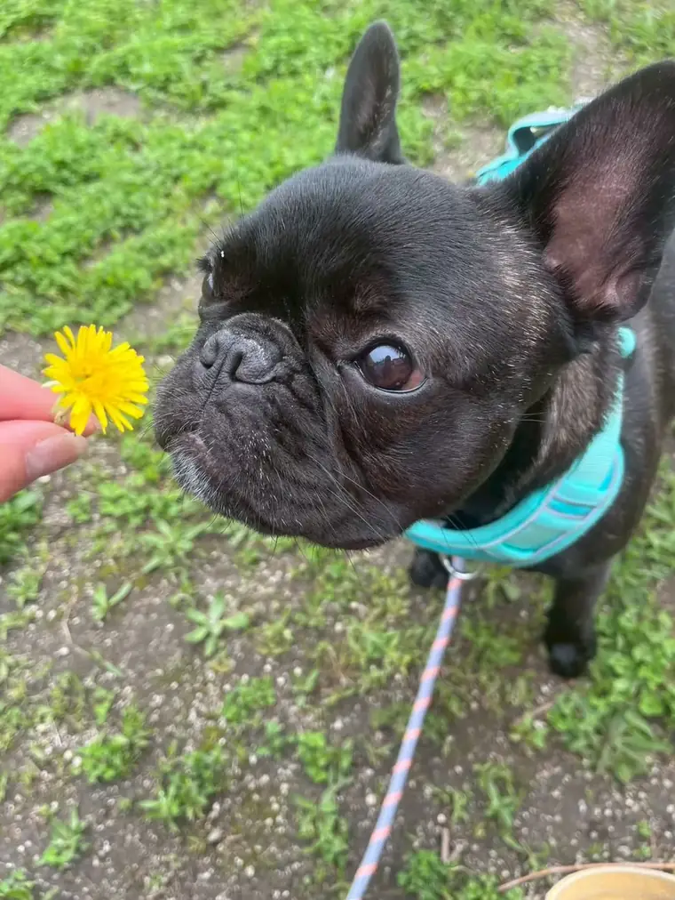
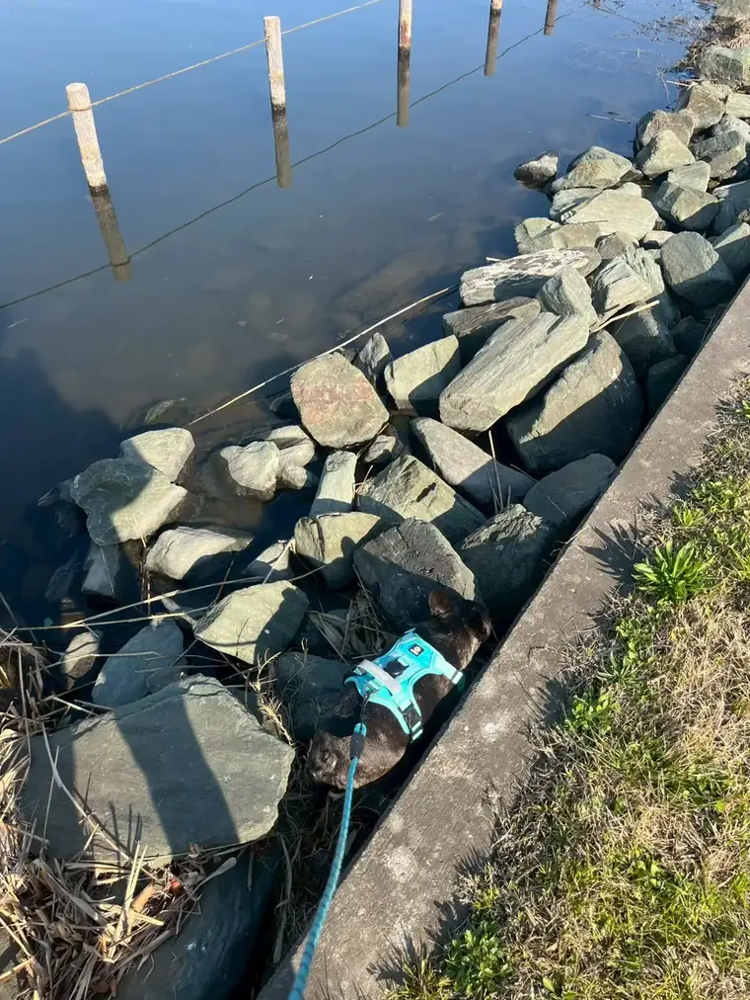

犬が食べると危険な、
身近な植物
庭・公園・散歩道で、知っておきたいこと ・ 2026年11月

こまより
このあいだ、土手のおさんぽで、知らない草をパクッ。そのあと3回もはいちゃって、口にはトゲまでささって……パパもママも、とってもあわててた。わたしたち犬は、気になるものを口で確かめちゃう生きもの。だから、どの植物があぶないのかを、みんなに知っておいてほしいんだ。
身近なところに、あぶない植物がある
おうちの庭木、ベランダの鉢植え、公園の植えこみ、散歩道の草むら。見なれた植物の中にも、犬が口にすると体調をくずすものがあります。軽い場合は、口の中のヒリヒリや、はく・おなかをこわすくらいですみます。でも植物の種類や食べた量によっては、心臓や神経にまで影響が出て、命にかかわることもあります。
注意したいポイント
同じ植物でも、球根・種・葉など部分によって毒の強さがちがいます。また、体の小さい子ほど少しの量で症状が出やすいので、「ひと口だけだから大丈夫」とは言い切れません。
とくに気をつけたい植物
| 植物 | どんな心配があるか |
|---|---|
| ツツジ・サツキとても危険 | 公園や生け垣でよく見かけます。葉や花に毒があり、よだれ・嘔吐・下痢のほか、ふらつきや心臓の異常につながることも。重いと命にかかわります。 |
| イチイとても危険 | 庭木や生け垣に使われます。葉や種に強い毒があり、少しの量でも心臓に影響して急変することがあります。赤い実の中の種も危険です。 |
| スイセン注意 | とくに球根に毒が多く、嘔吐・下痢・よだれなど。たくさん食べると、けいれんや心臓の異常が出ることも。 |
| チューリップ注意 | 球根に多く、口の中の刺激やよだれ、嘔吐・下痢など。掘り返し遊びに注意。 |
| アジサイ注意 | 葉や花を食べると、嘔吐・下痢など。梅雨の散歩道でよく見かけます。 |
| アイビー（ヘデラ）注意 | 観葉植物や壁のつたでおなじみ。嘔吐・下痢・よだれ、おなかの痛みなど。 |
| トチノキの実 （マロニエも）注意 | 秋に落ちる実（トチの実）や葉で、嘔吐・下痢など。拾い食いに注意。 |
| ルバーブ注意 | 家庭菜園で育てることも。葉にシュウ酸が多く、よだれ・ふるえのほか、たくさん食べると腎臓に負担がかかることがあります。 |
| タマネギ・ニンニク・ネギ類とても危険 | 植物としても食べ物としても危険。血液（赤血球）がこわれて貧血になることがあり、症状が数日おくれて出ることも。土手に生えるノビルもネギの仲間です。 |
※ ここにあるのは代表的なものだけです。ほかにも、ユリ（とくに猫に危険）、キョウチクトウ、スズラン、ポトスなど、注意が必要な植物はたくさんあります。名前がわからない植物は、「食べさせない」がいちばん安全です。

草むらには気をつけて。
土手・草むらの、もうひとつのこわさ
こまのときのように、散歩道の草むらには「毒」以外の危険もあります。
- トゲ・とがった種。アザミのようなトゲのある草や、エノコログサ（ねこじゃらし）などイネ科の穂先は、口の中・鼻・耳・指のあいだにささりやすく、奥に入りこむこともあります。
- 除草剤や農薬。道ばたや畑のそばの草には、薬がまかれていることがあります。見た目ではわかりません。
- 草を食べてはく。犬が草を食べること自体はよくあることですが、何度もはく・元気がないときは、草以外の原因も考えて受診を。
おさんぽ中は、リードを短めにして草むらに顔をつっこませない。「ちょうだい（はなして）」「まて」の練習も、いざというとき役に立ちます。帰ったら、口の中・鼻・耳・足の指のあいだをさっとチェックしてあげてね。
もし、食べてしまったら
- 口に残っているものを、そっと取りのぞく。かまれないように気をつけて。
- 何を・どれくらい・いつ食べたかをメモする。わかれば植物の写真をとるか、実物を持っていく。
- すぐ動物病院に電話する。元気そうに見えても、まず相談を。夜間は救急の動物病院へ。
- 自分で吐かせない。塩やオキシドールを飲ませるのは危険です。病院の指示を待ってね。
すぐに受診してほしいサイン：何度もはく・止まらない／血がまじる／よだれが多い／口をしきりに気にする・前足でかく／ぐったり・ふらつく／ふるえ・けいれん／息が苦しそう／歯ぐきが白っぽい。
——タマネギやネギ類のように、あとから症状が出るものもあるので、その日は元気でも数日は様子をよく見てあげてね。
——タマネギやネギ類のように、あとから症状が出るものもあるので、その日は元気でも数日は様子をよく見てあげてね。
おうちでできる、いちばんの予防
- わんちゃんの届く場所に、危険な観葉植物や球根を置かない。
- 庭にどんな植物があるか、一度ぜんぶ確かめておく。
- かかりつけ病院と、夜間救急の電話番号をスマホに入れておく。
だいじなおやくそく。この記事は一般的な情報で、診断や治療ではありません。毒の強さや症状は、植物の種類・部分・食べた量、そしてその子の体の大きさや体質でかわります。「食べたかも」と思ったら、様子を見るより先に、動物病院に相談してね。